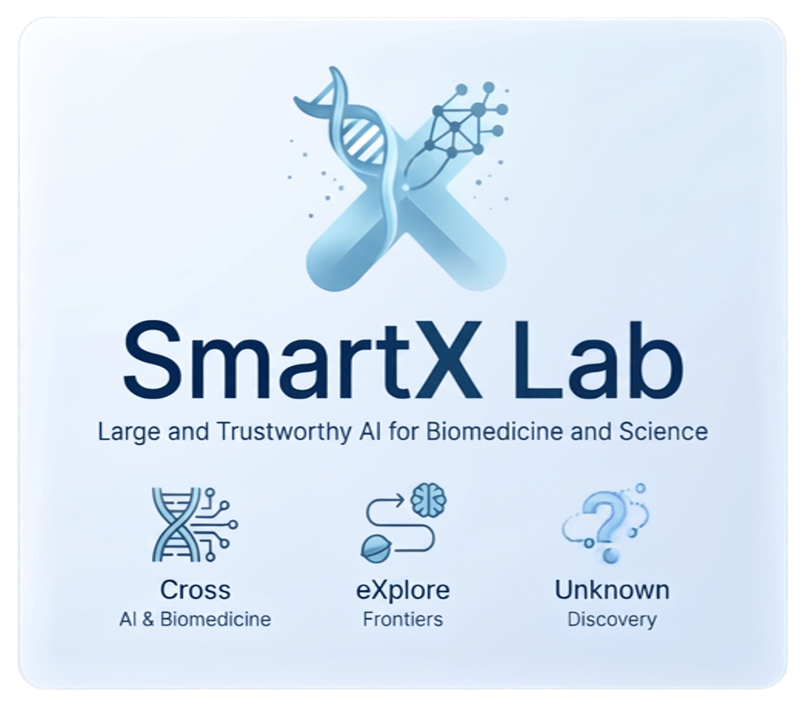
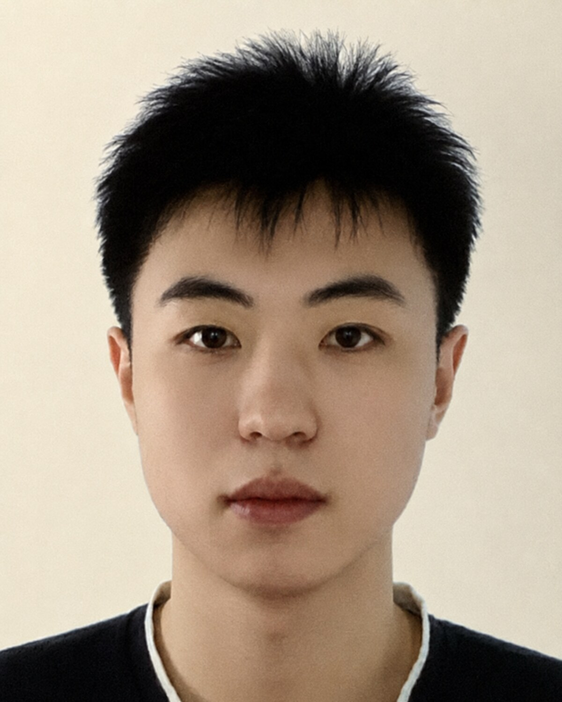
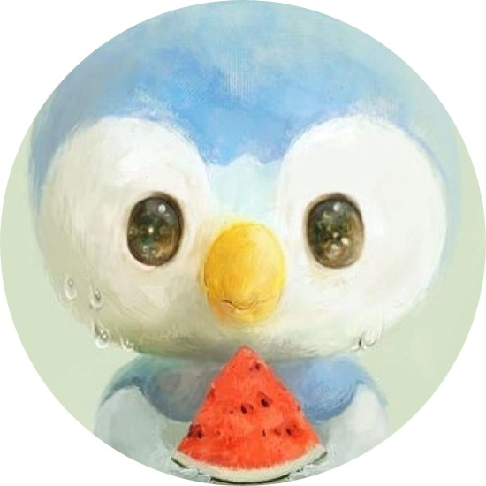
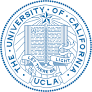
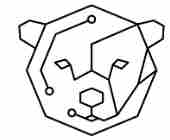
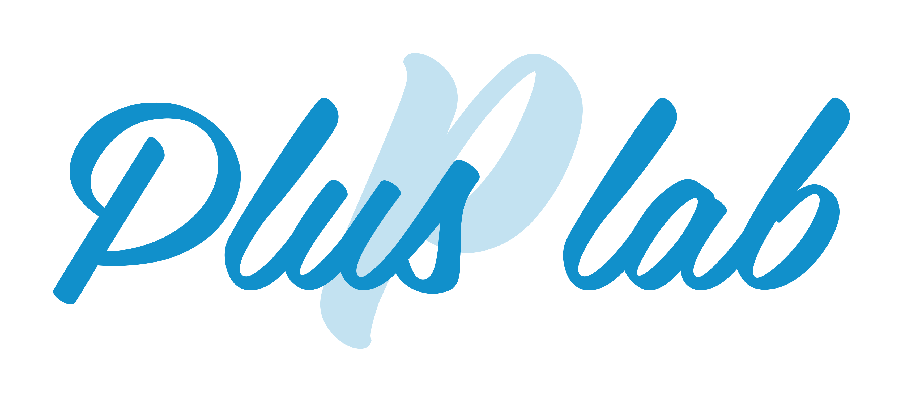
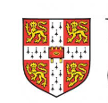

SmartX Lab, HKUST
PhD Student in Computer Science · First year
Advisor: Prof. Hao Chen
Research: Agentic AI for Scientific Discovery

Hello, I'm
CS PhD Student at HKUST
I am a first-year PhD student in Computer Science at the Hong Kong University of Science and Technology (HKUST), supported by the HKPFS. You can call me Rui (Ray). I am a member of SmartX Lab, advised by Prof. Hao Chen.
Previously, I received my BS from Fudan University and my MS from UCLA. At UCLA, I conducted research in the HCI Lab under the supervision of Prof. Xiang Anthony Chen.
My current research centers on agentic AI for scientific discovery. I am also interested in AI for Science, vision-language models (VLMs), and reinforcement learning for large language models (LLMs).

Get to know More
PhD, Computer Science
First-year student
Advisor: Prof. Hao Chen

MS, Electrical and Computer Engineering, 2026
GPA: 4.0/4.0
Advisor: Prof. Xiang Anthony Chen
BS, Biomedical Engineering, 2024
GPA: 3.89/4.0, Ranking:1
My current research focuses on agentic AI for scientific discovery. Before starting my PhD at HKUST, I completed my MS in Electrical and Computer Engineering at UCLA, where I worked on molecule generation with large language models and reinforcement learning in the UCLA HCI Lab, supervised by Prof. Xiang Anthony Chen and collaborating with Dr. Youngseung Jeon. I also worked on vision-language models for autonomous driving at PlusLab, UCLA, supervised by Prof. Nanyun Peng and collaborating with Dr. Wenbo Hu and Dr. Jiachen Gu.
I received my BS in Biomedical Engineering from Fudan University, where I studied from 2020 to 2024. My undergraduate research included physiological signal classification and prediction under Prof. Yu Ma and Prof. Cuiwei Yang at the Fudan Biomedical Center. I was also very fortunate to join the AFAR Lab at the University of Cambridge, where I worked on multimodal models for depression research with Dr. Batuhan Sayis, under the supervision of Prof. Hatice Gunes.
Outside of research and studying, I enjoy playing badminton and jogging. Hong Kong is a great place for jogging, especially along the waterfront. I’m also a skilled FPS esports player (CS >> Val).
arXiv preprint, 2026
arXiv preprint, 2025
ACII Workshops and Demos, 2024
Explore My

PhD Student in Computer Science · First year
Advisor: Prof. Hao Chen
Research: Agentic AI for Scientific Discovery

Research Assistant
Started June 2025
Advisor: Prof. Xiang Anthony Chen
Research: LLMs for Molecule Generation and Hypothesis Generation

Research Assistant
Started December 2025
Supervisor: Prof. Nanyun Peng
Research: VLMs for Autonomous Driving

Research Assistant
2023 Jun - 2024 Feb
Advisor: Prof. Hatice Gunes
Research: Multimodal Models for Depression Research
Get in Touch